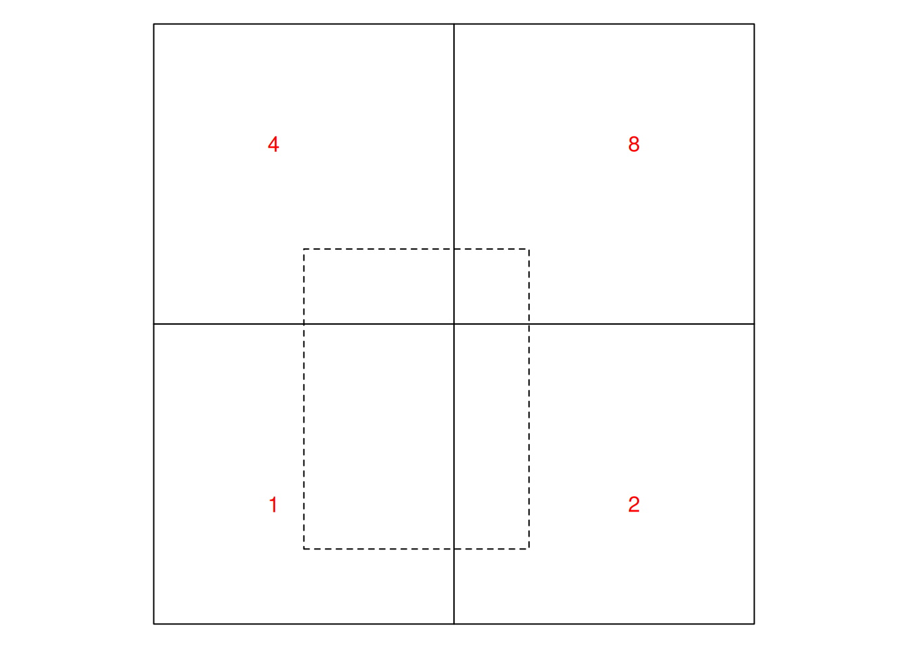

Feature attributes refer to the properties of features (“things”) that do not describe the feature’s geometry. Feature attributes can be derived from geometry (such as length of a LINESTRING or area of a POLYGON), but they can also refer to non-derived properties, such as:
name of a street or county
number of people living in a country
type of a road
soil type in a polygon from a soil map
opening hours of a shop
body weight or heart beat rate of an animal
NO\(_2\) concentration measured at an air quality monitoring station
In some cases, time properties can be seen as attributes of features, for instance the date of birth of a person or the construction year of a road. When an attribute such as for instance air quality is a function of both space and time, time is best handled on equal footing with geometry (often in a data cube, see Chapter 6).
Spatial data science software implementing simple features typically organises data in tables that contain both geometries and attributes for features; this is true for geopandas in Python, PostGIS tables in PostgreSQL, and sf objects in R. The geometric operations described in Section 3.2 operate on geometries only, and may occasionally yield new attributes (predicates, measures, or transformations), but they do not operate on attributes present.
When, while manipulating geometries, attribute values are retained unmodified, support problems may arise. If we look into a simple case of replacing a county polygon with the centroid of that polygon on a dataset that has attributes, we see that R package sf issues a warning:
# Warning: st_centroid assumes attributes are constant over
# geometries
The reason for this is that the dataset contains variables with values that are associated with entire polygons – in this case population counts – meaning they are not associated with a POINT geometry replacing the polygon.
In Section 1.6 we already described that for non-point geometries (lines, polygons), feature attribute values either have point support, meaning that the value applies to every point, or they have block support, meaning that the value summarises all points in the geometry. (Other options, non-point support smaller than the geometry, or support larger than the associated geometry, may also occur.) This chapter will describe different ways in which an attribute may relate to the geometry, its consequences on analysing such data, and ways to derive attribute data for different geometries (up- and downscaling).
5.1 Attribute-geometry relationships and support
Changing the feature geometry without changing the feature attributes does change the feature, since the feature is characterised by the combination of geometry and attributes. Can we, ahead of time, predict whether the resulting feature will still meaningfully relate to the attribute value when we replace all geometries for instance with their convex hull or centroid? It depends.
Take the example of a road, represented by a LINESTRING, which has an attribute property road width equal to 10 m. What can we say about the road width of an arbitrary sub-section of this road? That depends on whether the attribute road length describes, for instance the road width everywhere, meaning that road width is constant along the road, or whether it describes an aggregate property, such as minimum or average road width. In case of the minimum, for an arbitrary subsection of the road one could still argue that the minimum road width must be at least as large as the minimum road width for the whole segment, but it may no longer be the minimum for that subsection. This gives us two “types” for the attribute-geometry relationship (AGR):
constant the attribute value is valid everywhere in or over the geometry; we can think of the feature as consisting of an infinite number of points that all have this attribute value; in geostatistical terminology this is known as a variable with point support
aggregate the attribute is an aggregate, a summary value over the geometry; we can think of the feature as a single observation with a value that is associated with the entire geometry; this is also known as a variable having block support
For polygon data, typical examples of constant AGR (point support) variables are:
land use for a land use polygon
rock units or geologic strata in a geological map
soil type in a soil map
elevation class in an elevation map that shows elevation as classes
climate zone in a climate zone map
A typical property of such variables is that they have geometries that are not man-made and also not associated with a sensor device (such as remote sensing image pixel boundaries). Instead, the geometry follows from mapping the variable observed.
Examples for the aggregate AGR (block support) variables are:
population, either as number of persons or as population density
other socio-economic variables, summarised by area
average reflectance over a remote sensing pixel
total emission of pollutants by region
block mean NO\(_2\) concentrations, such as obtained by block kriging over square blocks (Section 12.5) or by a dispersion model that predicts areal means
A typical property of such variables is that associated geometries come for instance from legislation, observation devices or analysis choices, but not intrinsically from the observed variable.
A third type of AGR arises when an attribute identifies a feature geometry; we call an attribute an identity variable when the associated geometry uniquely identifies the variable’s value (there are no other geometries with the same value). An example is county name: the name identifies the county, and is still the county for any sub-area (point support), but for arbitrary sub-areas, the attributes loses the identity property to become a constant attribute. An example is:
an arbitrary point (or region) inside a county is still part of the county and must have the same value for county name, but it no longer identifies the (entire) geometry corresponding to that county
The challenge here is that spatial information (ignoring time for simplicity) belongs to different phenomena types (Scheider et al. 2016), including:
fields: where over continuous space, every location corresponds to a single value, examples including elevation, air quality, or land use
objects: found at a discrete set of locations, such as houses, trees, or persons
aggregates: values arising as spatial sums, totals, or averages of fields, counts or densities of objects, associated with lines or regions
but that different spatial geometry types (points, lines, polygons, raster cells) have no simple mapping to these phenomena types:
points may refer to sample locations of observations on fields (air quality) or to locations of objects
lines may be used for objects (roads, rivers), contours of a field, or administrative borders
raster pixels and polygons may reflect fields of a categorical variable such as land use (coverage), but also aggregates such as population density
raster or other mesh triangulations may have different variables associated with nodes (points), edges (lines), or faces (areas, cells), for instance when partial differential equations are approximated using staggered grids(Haltiner and Williams 1980; Collins et al. 2013)
Properly specifying attribute-geometry relationships, and warning against their absence or cases when change in geometry (change of support) implies a change of information can help to avoid a large class of common spatial data analysis mistakes (Stasch et al. 2014) associated with the support of spatial data.
5.2 Aggregating and summarising
Aggregating records in a table (or data.frame) involves two steps:
grouping records based on a grouping predicate, and
applying an aggregation function to the attribute values of a group to summarise them into a single number.
In SQL, this looks for instance like
SELECT GroupID, SUM(population) FROM table GROUP BY GroupID;
indicating the aggregation function (SUM) and the grouping predicate (GroupID).
R package dplyr for instance uses two steps to accomplish this: function group_by specifies the group membership of records, summarise computes data summaries (such as sum or mean) for each of the groups. The (base) R method aggregate combines both in a single function call that takes the table, the grouping predicate(s), and the aggregation function(s) as arguments.
An example for the North Carolina counties is shown in Figure 5.1. Here, we grouped counties by their position (according to the quadrant in which the county centroid is with respect to ellipsoidal coordinate POINT(-79, 35.5)) and summed the number of disease cases per group. The result shows that the geometries of the resulting groups have been unioned (Section 3.2.6): this is necessary because the MULTIPOLYGON formed by just putting all the county geometries together would have many duplicate boundaries, and hence would not be valid (Section 3.1.2).
Figure 5.1: SID74 total incidences aggregated to four areas
Plotting collated county polygons is technically not a problem, but for this case would raise the wrong suggestion that the group sums relate to individual counties, rather than to the grouped counties.
One particular property of aggregation in this way is that each record is assigned to a single group; this has the advantage that the sum of the group-wise sums equals the sum of the un-grouped data: for variables that reflect amount, nothing gets lost and nothing is added. The newly formed geometry is the result of unioning the geometries of the contributing records.
Figure 5.2: Example target blocks plotted over North Carolina counties
When we need an aggregate for a new area that is not a union of the geometries for a group of records, and we use a spatial predicate, then single records may be matched to multiple groups. When taking the rectangles of Figure 5.2 as the target areas, and summing for each rectangle the disease cases of the counties that intersect with the rectangles of Figure 5.2, the sum of these will be much larger:
Code
a <-aggregate(nc["SID74"], gr, sum)c(sid74_sum_counties =sum(nc$SID74),sid74_sum_rectangles =sum(a$SID74, na.rm =TRUE))
Choosing another predicate, such as contains or covers, would on the contrary result in much smaller values, because many counties are not contained by any of the target geometries. However, there are a few cases where this approach might be good or satisfactory:
when we want to aggregate POINT geometries by a set of polygons, and all points are contained by a single polygon. If points fall on a shared boundary than they are assigned to both polygons (this is the case for DE-9IM-based GEOS library; the s2geometry library has the option to define polygons as “semi-open”, which implies that points are assigned to maximally one polygons when polygons do not overlap)
when aggregating many very small polygons or raster pixels over larger areas, for instance averaging altitude from a 30 m resolution raster over North Carolina counties, the error made by multiple matches may be insignificant
when the many-to-many match is reduced to the single largest area match, as shown in Figure 7.4
A more comprehensive approach to aggregating spatial data associated with areas to larger, arbitrary shaped areas is by using area-weighted interpolation.
5.3 Area-weighted interpolation
When we want to combine geometries and attributes of two datasets such that we get attribute values of a source dataset summarised for the geometries of a target, where source and target geometries are unrelated, area-weighted interpolation may be a simple approach. In effect, it considers the area of overlap of the source and target geometries, and uses that to weigh the source attribute values into the target value (Goodchild and Lam 1980; Do, Thomas-Agnan, and Vanhems 2015a, 2015b; Do, Laurent, and Vanhems 2021). This methods is also known as conservative region aggregation or regridding (Jones 1999). Here, we follow the notation of Do, Thomas-Agnan, and Vanhems (2015b).
Area-weighted interpolation computes, for each of \(q\) spatial target areas \(T_j\), a weighted average from the values \(Y_i\) corresponding to the \(p\) spatial source areas \(S_i\),
where the \(w_{ij}\) depend on the amount of overlap of \(T_j\) and \(S_i\), and the amount of overlap is \(A_{ij} = T_j \cap S_i\). How \(w_{ij}\) depends on \(A_{ij}\) is discussed below.
Different options exist for choosing weights, including methods using external variables (including dasymetric mapping, Mennis 2003). Two simple approaches for computing weights that do not use external variables arise, depending on whether the variable \(Y\) is intensive or extensive.
Spatially extensive and intensive variables
Extensive variables correspond to amounts, associated with a physical size (length, area, volume, counts of items). An example of a extensive variable is population count. It is associated with an area, and if that area is cut into smaller areas, the population count needs to be split too. Because population is rarely uniform over space, this does not need to be done proportionally to the smaller areas but the sum of the population count for the smaller areas needs to equal that of the total. Intensive variables are variables that do not have values proportional to support: if the area is split, values may vary but on average remain the same. An example of a related variable that is intensive is population density. If an area is split into smaller areas, population density is not split similarly: the sum of population densities for the smaller areas is a meaningless measure, as opposed to the average of the population densities which will be similar to the density of the total area.
When we assume that the extensive variable \(Y\) is uniformly distributed over space, the value \(Y_{ij}\), derived from \(Y_i\) for a sub-area of \(S_i\), \(A_{ij} = T_j \cap S_i\) of \(S_i\) is
For an intensive variable, under the assumption that the variable has a constant value over each area \(S_i\), the estimate for a sub-area equals that of the total area,
\[\hat{Y}_{ij} = Y_i(S_i)\]
and we can estimate the value of \(Y\) for a new spatial unit \(T_j\) by an area-weighted average of the source values:
Dasymetric mapping distributes variables, such as population, known at a coarse spatial aggregation level over finer spatial units by using other variables that are associated with population distribution, such as land use, building density, or road density. The simplest approach to dasymetric mapping is obtained for extensive variables, where the ratio \(|A_{ij}| / |S_i|\) in Equation 5.2 is replaced by the ratio of another extensive variable \(X_{ij}(S_{ij})/X_i(S_i)\), which has to be known for both the intersecting regions \(S_{ij}\) and the source regions \(S_i\). Do, Thomas-Agnan, and Vanhems (2015b) discuss several alternatives for intensive \(Y\) and/or \(X\), and cases where \(X\) is known for other areas.
Support in file formats
GDAL’s vector API supports reading and writing so-called field domains, which can have a “split policy” and a “merge policy” indicating what should be done with attribute variables when geometries are split or merged. The values of these can be “duplicate” for split and “geometry weighted” for merge, in case of spatially intensive variables, or they can be “geometry ratio” for split and “sum” for merge, in case of spatially extensive variables. At the time of writing this, the file formats supporting this are GeoPackage and FileGDB.
5.4 Up- and Downscaling
Up- and downscaling refers in general to obtaining high-resolution information from low-resolution data (downscaling) or obtaining low-resolution information from high-resolution data (upscaling). Both activities involve the attributes’ relation to geometries and both change support. They are synonymous with aggregation (upscaling) and disaggregation (downscaling). The simplest form of downscaling is sampling (or extracting) polygon, line or grid cell values at point locations. This works well for variables with point-support (“constant” AGR), but is at best approximate when the values are aggregates. Challenging applications for downscaling include high-resolution prediction of variables obtained by low-resolution weather prediction models or climate change models, and the high-resolution prediction of satellite image derived variables based on the fusion of sensors with different spatial and temporal resolutions.
The application of areal interpolation using (Equation 5.1) with its realisations for extensive (Equation 5.2) and intensive (Equation 5.3) variables allows moving information from any source area \(S_i\) to any target area \(T_j\) as long as the two areas have some overlap. This means that one can go arbitrarily to much larger units (aggregation) or to much smaller units (disaggregation). Of course this makes only sense to the extent that the assumptions hold: over the source regions extensive variables need to be uniformly distributed and intensive variables need to have a constant value.
The ultimate disaggregation involves retrieving (extracting) point values from line or area data. For this, we cannot work with equations -Equation 5.2 or -Equation 5.3 because \(|A_{ij}| = 0\) for points, but under the assumption of having a constant value over the geometry, for intensive variables the value \(Y_i(S_i)\) can be assigned to points as long as all points can be uniquely assigned to a single source area \(S_i\). For polygon data, this implies that \(Y\) needs to be a coverage variable (Section 3.4). For extensive variables, extracting a value at a point is rather meaningless, as it should always give a zero value.
In cases where values associated with areas are aggregate values over the area, the assumptions made by area-weighted interpolation or dasymetric mapping – uniformity or constant values over the source areas – are highly unrealistic. In such cases, these simple approaches could still be reasonable approximations, for instance when:
the source and target area are nearly identical
the variability inside source units is very small, and the variable is nearly uniform or constant
In other cases, results obtained using these methods are merely consequences of unjustified assumptions. Statistical aggregation methods that can estimate quantities for larger regions from points or smaller regions include:
design-based methods, which require that a probability sample is available from the target region, with known inclusion probabilities (Brus 2021, Section 10.4), and
model-based methods, which assume a random field model with spatially correlated values (block kriging, Section 12.5)
Alternative disaggregation methods include:
deterministic, smoothing-based approaches such as kernel- or spline-based smoothing methods (Tobler 1979; Martin 1989)
Where relevant, try to make the following exercises with R.
When we add a variable to the nc dataset by nc$State = "North Carolina" (i.e., all counties get assigned the same state name). Which value would you attach to this variable for the attribute-geometry relationship (agr)?
Create a new sf object from the geometry obtained by st_union(nc), and assign "North Carolina" to the variable State. Which agr can you now assign to this attribute variable?
Use st_area to add a variable with name area to nc. Compare the area and AREA variables in the nc dataset. What are the units of AREA? Are the two linearly related? If there are discrepancies, what could be the cause?
Is the area variable intensive or extensive? Is its agr equal to constant, identity or aggregate?
Consider Figure 5.3: using the equations in Section 5.3.1, compute the area-weighted interpolations for (a) the dashed cell and (b) for the square enclosing all four solid cells, first for the case where the four cells represent (i) an extensive variable, and (ii) an intensive variable. The red numbers are the data values of the source areas.
Code
g <-st_make_grid(st_bbox(st_as_sfc("LINESTRING(0 0,1 1)")), n =c(2,2))par(mar =rep(0,4))plot(g)plot(g[1] *diag(c(3/4, 1)) +c(0.25, 0.125), add =TRUE, lty =2)text(c(.2, .8, .2, .8), c(.2, .2, .8, .8), c(1,2,4,8), col ='red')

Figure 5.3: Example data for area-weighted interpolation
Brus, Dick J. 2021. “Statistical Approaches for Spatial Sample Survey: Persistent Misconceptions and New Developments.”European Journal of Soil Science 72 (2): 686–703. https://doi.org/10.1111/ejss.12988.
Collins, Sarah N., Robert S. James, Pallav Ray, Katherine Chen, Angie Lassman, and James Brownlee. 2013. “Grids in Numerical Weather and Climate Models.” In Climate Change and Regional/Local Responses, edited by Yuanzhi Zhang and Pallav Ray. Rijeka: IntechOpen. https://doi.org/10.5772/55922.
Do, Van Huyen, Thibault Laurent, and Anne Vanhems. 2021. “Guidelines on Areal Interpolation Methods.” In Advances in Contemporary Statistics and Econometrics: Festschrift in Honor of Christine Thomas-Agnan, edited by Abdelaati Daouia and Anne Ruiz-Gazen, 385–407. Cham: Springer International Publishing. https://doi.org/10.1007/978-3-030-73249-3_20.
Do, Van Huyen, Christine Thomas-Agnan, and Anne Vanhems. 2015a. “Accuracy of Areal Interpolation Methods for Count Data.”Spatial Statistics 14: 412–38. https://doi.org/10.1016/j.spasta.2015.07.005.
Goodchild, Michael F, and Nina Siu Ngan Lam. 1980. Areal Interpolation: A Variant of the Traditional Spatial Problem. Department of Geography, University of Western Ontario London, ON, Canada.
Haltiner, G. J., and R. T. Williams. 1980. Numerical Prediction and Dynamic Meteorology. New York: John Wiley; Sons.
Jones, Philip W. 1999. “First- and Second-Order Conservative Remapping Schemes for Grids in Spherical Coordinates.”Mon. Wea. Rev. 127: 2204–10. https://doi.org/ 10.1175/1520-0493(1999) .
Kyriakidis, P. C. 2004. “A Geostatistical Framework for Areal-to-Point Spatial Interpolation.”Geographical Analysis 36: 259–89.
Martin, D. 1989. “Mapping Population Data from Zone Centroid Locations.”Transactions of the Institute of British Geographers, New Series 14: 90–97.
Mennis, Jeremy. 2003. “Generating Surface Models of Population Using Dasymetric Mapping.”The Professional Geographer 55 (1): 31–42.
Raim, A. M., S. H. Holan, J. R. Bradley, and C. K. Wikle. 2021. “Spatio-Temporal Change of Support Modeling with r.”Computational Statistics 36: 749–80. https://doi.org/ 10.1007/s00180-020-01029-4 .
Scheider, Simon, Benedikt Gräler, Edzer Pebesma, and Christoph Stasch. 2016. “Modeling Spatiotemporal Information Generation.”International Journal of Geographical Information Science 30 (10): 1980–2008. https://doi.org/10.1080/13658816.2016.1151520.
Stasch, Christoph, Simon Scheider, Edzer Pebesma, and Werner Kuhn. 2014. “Meaningful Spatial Prediction and Aggregation.”Environmental Modelling & Software 51: 149–65. https://doi.org/10.1016/j.envsoft.2013.09.006.
Tobler, W. R. 1979. “Smooth Pycnophylactic Interpolation for Geographical Regions.”Journal of the American Statistical Association 74: 519–30.
Source Code
# Attributes and Support {#sec-featureattributes}\index{support}\index{geometry!support}Feature _attributes_ refer to the properties of features ("things")that do not describe the feature's geometry. Feature attributes canbe _derived_ from geometry (such as length of a `LINESTRING` or areaof a `POLYGON`), but they can also refer to non-derived properties,such as:* name of a street or county* number of people living in a country* type of a road* soil type in a polygon from a soil map* opening hours of a shop* body weight or heart beat rate of an animal* NO$_2$ concentration measured at an air quality monitoring stationIn some cases, time properties can be seen as attributes offeatures, for instance the date of birth of a person or the constructionyear of a road. When an attribute such as for instance air qualityis a function of both space and time, time is best handled onequal footing with geometry (often in a data cube, see @sec-datacube).Spatial data science software implementing simple featurestypically organises data in tables that contain both geometries andattributes for features; this is true for `geopandas` in Python,`PostGIS` tables in PostgreSQL, and `sf` objects in R. The geometricoperations described in @sec-opgeom operateon geometries _only_, and may occasionally yield new attributes(predicates, measures, or transformations), but they do not operateon attributes present.When, while manipulating geometries, attribute _values_ are retainedunmodified, support problems may arise.If we look into a simple case of replacing a county polygon withthe centroid of that polygon on a dataset that has attributes,we see that R package **sf** issues a warning:```{r fig-countycentroid, cache = FALSE, echo = !knitr::is_latex_output()}#| code-fold: true#| collapse: falselibrary(sf) |>suppressPackageStartupMessages()library(dplyr) |>suppressPackageStartupMessages()system.file("gpkg/nc.gpkg", package="sf") |>read_sf() |>st_transform(32119) |>select(BIR74, SID74, NAME) |>st_centroid() -> x```\newpageThe reason for this is that the dataset contains variables withvalues that are associated with entire polygons -- in this casepopulation counts -- meaning they are not associated with a`POINT` geometry replacing the polygon.\index{warning!assumes attributes are constant over geometries of x}In @sec-support we already described that for non-pointgeometries (lines, polygons), feature attribute values eitherhave _point support_, meaning that the value applies to _everypoint_, or they have _block support_, meaning that the value_summarises all points_ in the geometry. (Other options,non-point support smaller than the geometry, or support largerthan the associated geometry, may also occur.) This chapterwill describe different ways in which an attribute may relate tothe geometry, its consequences on analysing such data, and ways toderive attribute data for different geometries (up- and downscaling).\index{support!point}\index{support!block}\index{support!upscaling}\index{support!downscaling}## Attribute-geometry relationships and support {#sec-agr}\index{attribute-geometry relationship}\index{geometry!relationship to attribute}\index[function]{st\_agr}Changing the feature geometry without changing the feature attributesdoes change the _feature_, since the feature is characterised bythe combination of geometry and attributes. Can we, ahead of time,predict whether the resulting feature will still meaningfully relateto the attribute value when we replace all geometries for instancewith their convex hull or centroid? It depends.Take the example of a road, represented by a `LINESTRING`, which hasan attribute property _road width_ equal to 10 m. What can we say aboutthe road width of an arbitrary sub-section of this road? That dependson whether the attribute road length describes, for instance theroad width _everywhere_, meaning that road width is constant along theroad, or whether it describes an aggregate property, such as minimumor average road width. In case of the minimum, for an arbitrarysubsection of the road one could still argue that the minimumroad width must be at least as large as the minimum road width forthe whole segment, but it may no longer be _the minimum_ for thatsubsection. This gives us two "types" for the attribute-geometryrelationship (**AGR**):* **constant** the attribute value is valid everywhere in or over thegeometry; we can think of the feature as consisting of an infinitenumber of points that all have this attribute value; in geostatisticalterminology this is known as a variable with _point support_* **aggregate** the attribute is an aggregate, a summary value overthe geometry; we can think of the feature as a _single_ observationwith a value that is associated with the _entire_ geometry; this isalso known as a variable having _block support_\index{attribute-geometry relationship!constant}\index{attribute-geometry relationship!aggregate}For polygon data, typical examples of **constant** AGR (pointsupport) variables are:* land use for a land use polygon* rock units or geologic strata in a geological map* soil type in a soil map* elevation class in an elevation map that shows elevation as classes* climate zone in a climate zone mapA typical property of such variables is that they have geometriesthat are not man-made and also not associated with a sensor device(such as remote sensing image pixel boundaries). Instead, the geometryfollows from mapping the variable observed.Examples for the **aggregate** AGR (block support) variables are:* population, either as number of persons or as population density* other socio-economic variables, summarised by area* average reflectance over a remote sensing pixel* total emission of pollutants by region* block mean NO$_2$ concentrations, such as obtained by block kriging over square blocks (@sec-blockkriging) or by a dispersion model that predicts areal meansA typical property of such variables is that associated geometriescome for instance from legislation, observation devices or analysischoices, but not intrinsically from the observed variable.\index{attribute-geometry relationship!identity}A third type of AGR arises when an attribute _identifies_ a featuregeometry; we call an attribute an **identity** variable whenthe associated geometry uniquely identifies the variable's value(there are no other geometries with the same value). An example iscounty name: the name identifies the county, and is still the countyfor any sub-area (point support), but for arbitrary sub-areas, theattributes loses the **identity** property to become a **constant**attribute. An example is:* an arbitrary point (or region) inside a county is still part of thecounty and must have the same value for county name, but it nolonger identifies the (entire) geometry corresponding to that countyThe challenge here is that spatial information (ignoring time forsimplicity) belongs to different phenomena types [@scheider2016],including:* **fields**: where over _continuous_ space, every location corresponds to a single value, examples including elevation, air quality, or land use* **objects**: found at a _discrete_ set of locations, such as houses, trees, or persons* **aggregates**: values arising as spatial sums, totals, or averages of fields, counts or densities of objects, associated with lines or regions\index{fields}\index{objects}\index{aggregates}but that different spatial geometry types (points, lines, polygons,raster cells) have no simple mapping to these phenomena types:* points may refer to sample locations of observations on fields (air quality) or to locations of objects* lines may be used for objects (roads, rivers), contours of a field, or administrative borders* raster pixels and polygons may reflect fields of a categoricalvariable such as land use (_coverage_), but also aggregates suchas population density* raster or other mesh triangulations may have different variablesassociated with nodes (points), edges (lines), or faces(areas, cells), for instance when partial differential equationsare approximated using _staggered grids_ [@Haltiner; @Collins13]Properly specifying attribute-geometry relationships, and warningagainst their absence or cases when change in geometry (changeof support) implies a change of information can help to avoid alarge class of common spatial data analysis mistakes [@stasch2014]associated with the _support_ of spatial data.## Aggregating and summarisingAggregating records in a table (or `data.frame`) involves two steps:* grouping records based on a grouping predicate, and* applying an aggregation function to the attribute values of agroup to summarise them into a single number.In SQL, this looks for instance like```SELECT GroupID, SUM(population) FROM table GROUP BY GroupID;```indicating the aggregation _function_ (`SUM`) and the_grouping predicate_ (`GroupID`). R package **dplyr** for instance uses two steps to accomplish this:function `group_by` specifies the group membership of records,`summarise` computes data summaries (such as `sum` or `mean`)for each of the groups. The (base) R method `aggregate` combinesboth in a single function call that takes the table, the groupingpredicate(s), and the aggregation function(s) as arguments.An example for the North Carolina counties is shown in@fig-ncaggregation. Here, we grouped counties by their position(according to the quadrant in which the county centroid is withrespect to ellipsoidal coordinate `POINT(-79, 35.5)`) and summedthe number of disease cases per group. The result shows thatthe geometries of the resulting groups have been unioned (@sec-bintrans): this is necessary because the `MULTIPOLYGON`formed by just putting all the county geometries together wouldhave many duplicate boundaries, and hence would not be _valid_(@sec-valid).```{r fig-ncaggregation, echo = !knitr::is_latex_output()}#| code-fold: true#| fig.cap: "SID74 total incidences aggregated to four areas"#| fig.height: 4nc <-read_sf(system.file("gpkg/nc.gpkg", package ="sf"))# encode quadrant by two logicals:nc$lng <-st_coordinates(st_centroid(st_geometry(nc)))[,1] >-79nc$lat <-st_coordinates(st_centroid(st_geometry(nc)))[,2] >35.5nc.grp <-aggregate(nc["SID74"], list(nc$lng, nc$lat), sum)nc.grp["SID74"] |>st_transform('EPSG:32119') |>plot(graticule =TRUE, axes =TRUE)```Plotting collated county polygons is technically not a problem, butfor this case would raise the wrong suggestion that the group sumsrelate to individual counties, rather than to the grouped counties.One particular property of aggregation in this way is that eachrecord is assigned to a single group; this has the advantage thatthe sum of the group-wise sums equals the sum of the un-grouped data:for variables that reflect _amount_, nothing gets lost and nothingis added. The newly formed geometry is the result of unioning thegeometries of the contributing records.```{r fig-ncblocks, echo=!knitr::is_latex_output()}#| fig.cap: "Example target blocks plotted over North Carolina counties"#| code-fold: truenc <-st_transform(nc, 2264)gr <-st_sf(label =apply(expand.grid(1:10, LETTERS[10:1])[,2:1], 1, paste0, collapse =" "),geom =st_make_grid(nc))plot(st_geometry(nc), reset =FALSE, border ='grey')plot(st_geometry(gr), add =TRUE)```When we need an aggregate for a new area that is _not_ a union of thegeometries for a group of records, and we use a spatial predicate,then single records may be matched to multiple groups. When takingthe rectangles of @fig-ncblocks as the target areas,and summing for each rectangle the disease cases of the countiesthat _intersect_ with the rectangles of @fig-ncblocks,the sum of these will be much larger:```{r fig-aggnc, echo=!knitr::is_latex_output()}#| code-fold: true#| collapse: falsea <-aggregate(nc["SID74"], gr, sum)c(sid74_sum_counties =sum(nc$SID74),sid74_sum_rectangles =sum(a$SID74, na.rm =TRUE))```Choosing another predicate, such as _contains_ or _covers_, would onthe contrary result in much smaller values, because many countiesare not contained by _any_ of the target geometries. However, there area few cases where this approach might be good or satisfactory:* when we want to aggregate `POINT` geometries by a set of polygons,and all points are contained by a single polygon. If points fall on ashared boundary than they are assigned to both polygons (this isthe case for DE-9IM-based GEOS library; the s2geometry library hasthe option to define polygons as "semi-open", which implies thatpoints are assigned to maximally one polygons when polygons do notoverlap)* when aggregating many very small polygons or raster pixels overlarger areas, for instance _averaging_ altitude from a 30 m resolution rasterover North Carolina counties, the error made by multiple matchesmay be insignificant* when the many-to-many match is reduced to the single largest areamatch, as shown in @fig-largestA more comprehensive approach to aggregating spatial data associatedwith areas to larger, arbitrary shaped areas is by using area-weightedinterpolation.## Area-weighted interpolation {#sec-area-weighted}\index{area-weighted interpolation}\index{interpolation!area-weighted}\index{conservative region aggregation}\index{conservative region regridding}When we want to combine geometries and attributes of two datasetssuch that we get attribute values of a source dataset summarised forthe geometries of a target, where source and target geometries areunrelated, area-weighted interpolation may be a simple approach. Ineffect, it considers the area of overlap of the source and targetgeometries, and uses that to weigh the source attribute values intothe target value [@goodchild; @thomas; @do; @Do2021]. This methodsis also known as conservative region aggregation or regridding[@conservative]. Here, we follow the notation of @do.Area-weighted interpolation computes, for each of $q$ spatial targetareas $T_j$, a weighted average from the values $Y_i$ correspondingto the $p$ spatial source areas $S_i$,$$\hat{Y}_j(T_j) = \sum_{i=1}^p w_{ij} Y_i(S_i)$$ {#eq-aw}where the $w_{ij}$ depend on the amount of overlap of $T_j$ and$S_i$, and the amount of overlap is $A_{ij} = T_j \cap S_i$. How$w_{ij}$ depends on $A_{ij}$ is discussed below.Different options exist for choosing weights, including methodsusing external variables [including dasymetric mapping, @mennis].Two simple approaches for computing weights that do not use externalvariables arise, depending on whether the variable $Y$ is _intensive_or _extensive_.### Spatially extensive and intensive variables {#sec-extensiveintensive}\index{extensive properties}\index{intensive properties}Extensive variables correspond to amounts, associated with aphysical size (length, area, volume, counts of items). An exampleof a extensive variable is _population count_. It is associated withan area, and if that area is cut into smaller areas, the populationcount needs to be split too. Because population is rarely uniformover space, this does not need to be done proportionally to thesmaller areas but the sum of the population count for the smallerareas needs to equal that of the total. Intensive variables arevariables that do not have values proportional to support: if thearea is split, values may vary but _on average_ remain the same.An example of a related variable that is _intensive_ is populationdensity. If an area is split into smaller areas, population densityis not split similarly: the _sum_ of population densities for thesmaller areas is a meaningless measure, as opposed to the _average_of the population densities which will be similar to the densityof the total area.When we assume that the **extensive** variable $Y$ is uniformlydistributed over space, the value $Y_{ij}$, derived from $Y_i$for a sub-area of $S_i$, $A_{ij} = T_j \cap S_i$ of $S_i$ is$$\hat{Y}_{ij}(A_{ij}) = \frac{|A_{ij}|}{|S_i|} Y_i(S_i)$$where $|\cdot|$ denotes the spatial area.For estimating $Y_j(T_j)$ we sum all the elements over area $T_j$:$$\hat{Y}_j(T_j) = \sum_{i=1}^p \frac{|A_{ij}|}{|S_i|} Y_i(S_i)$$ {#eq-awextensive}For an **intensive** variable, under the assumption that the variablehas a constant value over each area $S_i$, the estimate for asub-area equals that of the total area,$$\hat{Y}_{ij} = Y_i(S_i)$$and we can estimate the value of $Y$ for a new spatial unit $T_j$by an area-weighted average of the source values:$$\hat{Y}_j(T_j) = \sum_{i=1}^p \frac{|A_{ij}|}{|T_j|} Y_i(S_i)$$ {#eq-awintensive}### Dasymetric mapping\index{dasymetric mapping}Dasymetric mapping distributes variables, such as population,known at a coarse spatial aggregation level over finer spatialunits by using other variables that are associated with populationdistribution, such as land use, building density, or road density.The simplest approach to dasymetric mapping is obtained forextensive variables, where the ratio $|A_{ij}| / |S_i|$ in@eq-awextensive is replaced by the ratio of another extensivevariable $X_{ij}(S_{ij})/X_i(S_i)$, which has to be known for boththe intersecting regions $S_{ij}$ and the source regions $S_i$.@do discuss several alternatives for intensive $Y$ and/or $X$,and cases where $X$ is known for other areas.### Support in file formats\index{support!in file formats}GDAL's vector API supports reading and writing so-called fielddomains, which can have a "split policy" and a "merge policy"indicating what should be done with attribute variables whengeometries are split or merged. The values of these can be"duplicate" for split and "geometry weighted" for merge, incase of spatially intensive variables, or they can be "geometryratio" for split and "sum" for merge, in case of spatiallyextensive variables. At the time of writing this, the [fileformats supporting this](https://github.com/OSGeo/gdal/pull/3638)are GeoPackage and FileGDB.## Up- and Downscaling {#sec-updownscaling}\index{upscaling}\index{downscaling}Up- and downscaling refers in general to obtaining high-resolutioninformation from low-resolution data (downscaling) or obtaininglow-resolution information from high-resolution data (upscaling).Both activities involve the attributes' relation to geometries andboth change support. They are synonymous with aggregation (upscaling)and disaggregation (downscaling). The simplest form of downscalingis sampling (or extracting) polygon, line or grid cell values atpoint locations. This works well for variables with point-support("constant" AGR), but is at best approximate when the values areaggregates. Challenging applications for downscaling includehigh-resolution prediction of variables obtained by low-resolutionweather prediction models or climate change models, and thehigh-resolution prediction of satellite image derived variablesbased on the fusion of sensors with different spatial and temporalresolutions.The application of areal interpolation using (@eq-aw) withits realisations for extensive (@eq-awextensive) and intensive(@eq-awintensive) variables allows moving information from anysource area $S_i$ to any target area $T_j$ as long as the two areashave some overlap. This means that one can go arbitrarily to muchlarger units (aggregation) or to much smaller units (disaggregation).Of course this makes only sense to the extent that the assumptionshold: over the source regions extensive variables need to beuniformly distributed and intensive variables need to have aconstant value.The ultimate disaggregation involves retrieving (extracting)point values from line or area data. For this, we cannot work withequations -@eq-awextensive or -@eq-awintensive because$|A_{ij}| = 0$ for points, but under the assumption of having aconstant value over the geometry, for intensive variables the value$Y_i(S_i)$ can be assigned to points as long as all points can beuniquely assigned to a single source area $S_i$. For polygon data,this implies that $Y$ needs to be a coverage variable (@sec-coverages).For extensive variables, extracting a value at a point is rathermeaningless, as it should always give a zero value.In cases where values associated with areas are **aggregate** valuesover the area, the assumptions made by area-weighted interpolationor dasymetric mapping -- uniformity or constant values over thesource areas -- are highly unrealistic. In such cases, these simpleapproaches could still be reasonable approximations, for instance when:* the source and target area are nearly identical* the variability inside source units is very small, and the variableis nearly uniform or constant\newpageIn other cases, results obtained using these methods are merelyconsequences of unjustified assumptions. Statistical aggregationmethods that can estimate quantities for larger regions from pointsor smaller regions include:* design-based methods, which require that a probability sample isavailable from the target region, with known inclusion probabilities[@brus2021, @sec-design], and* model-based methods, which assume a random field model with spatiallycorrelated values (block kriging, @sec-blockkriging)\index{kriging!block}Alternative disaggregation methods include:* deterministic, smoothing-based approaches such as kernel- or spline-basedsmoothing methods [@toblerpyc; @martin89]* statistical, model-based approaches such as area-to-area andarea-to-point kriging [@kyriakidis04; @stcos].\index{interpolation!area-to-area}## ExercisesWhere relevant, try to make the following exercises with R.1. When we add a variable to the `nc` dataset by `nc$State ="North Carolina"` (i.e., all counties get assigned the same statename). Which value would you attach to this variable for theattribute-geometry relationship (agr)?2. Create a new `sf` object from the geometry obtained by`st_union(nc)`, and assign `"North Carolina"` to the variable`State`. Which `agr` can you now assign to this attribute variable?3. Use `st_area` to add a variable with name `area` to `nc`. Comparethe `area` and `AREA` variables in the `nc` dataset. What arethe units of `AREA`? Are the two linearly related? If there arediscrepancies, what could be the cause?4. Is the `area` variable intensive or extensive? Is its agr equal to`constant`, `identity` or `aggregate`?5. Consider @fig-awiex: using the equations in @sec-extensiveintensive, compute the area-weighted interpolationsfor (a) the dashed cell and (b) for the square enclosing all four solidcells, first for the case where the four cells represent (i) an extensivevariable, and (ii) an intensive variable. The red numbers are thedata values of the source areas.```{r fig-awiex, echo = !knitr::is_latex_output()}#| out.width: 40%#| fig.cap: "Example data for area-weighted interpolation"#| code-fold: trueg <-st_make_grid(st_bbox(st_as_sfc("LINESTRING(0 0,1 1)")), n =c(2,2))par(mar =rep(0,4))plot(g)plot(g[1] *diag(c(3/4, 1)) +c(0.25, 0.125), add =TRUE, lty =2)text(c(.2, .8, .2, .8), c(.2, .2, .8, .8), c(1,2,4,8), col ='red')```<!--* Find the name of the county that contains `POINT(-78.34046 35.017)`* Find the names of all counties with boundaries that touch county `Sampson`.* List the names of all counties that are less than 50 km away from county `Sampson`.-->{{< include ga.qmd >}}